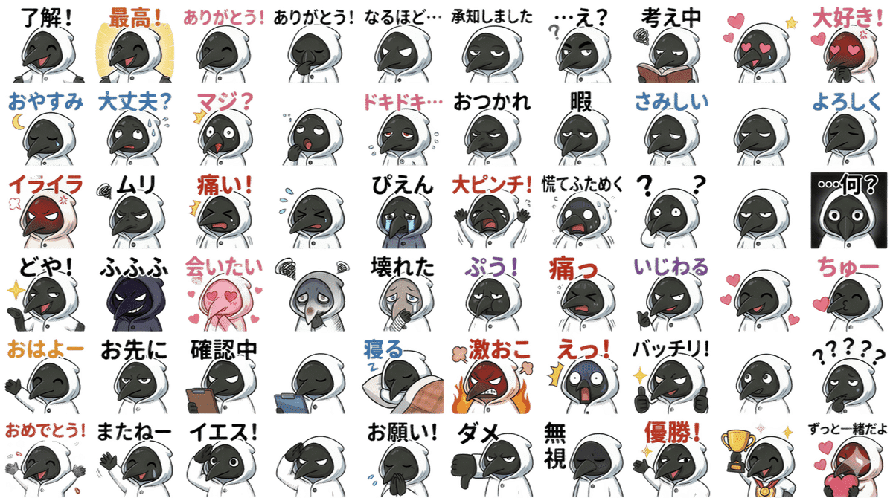
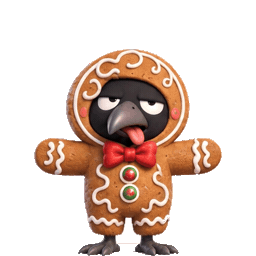
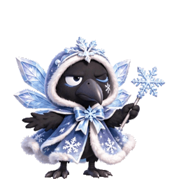
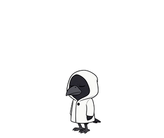
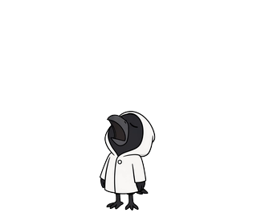
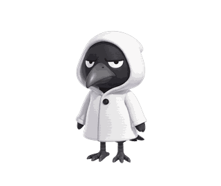

Aisology — Creator
KONSHU
[ コンシュ ]
黒いカラスのような鳥が、白いフード付きコートを着たオリジナルキャラクター。
アニメーションスタンプとステッカーを制作しています。
About
キャラクターと制作者
コンシュは、制作者 goro のオリジナルキャラクターです。公式紹介文は「エジプトの月の神をルーツに持つ、Yattemiyo Toolsのマスコット。月夜と、新しい道具が生まれる場所に現れます。」キャラクターは初期デザインから展開され、LINEスタンプ「KhonshStamp2」（全40種）がLINE STOREで販売中です。現在のアニメーション作品では、いつも半眼で、感情は表情よりも身振りで表すのが特徴です。これまでに、日常のあいさつや感情表現を集めたアニメーションスタンプ全19種と、季節のコスチュームを着たGIPHYステッカー全24種（クリスマス12種・ハロウィン12種）を制作しました。すべての作品はこのページと下記の公式チャンネルで公開しています。
About — English
Konshu is an original character created by goro, a Japan-based creator: a black, crow-like bird wearing a white hooded coat, known for half-lidded eyes and expressive gestures. Works include a 40-sticker set "KhonshStamp2" released on the LINE STORE, an animated stamp series (19 expressions) and 24 animated costume stickers published on GIPHY under the channel @konshu_goro. All works are original and non-commercial.
Works 01
LINEスタンプ
コンシュ最初のスタンプ作品です。表情素材を分類して作り上げた全40種のスタンプセット「KhonshStamp2」を、LINE STOREで販売しています。
スタンプシート（60種から40種を選定）

表情素材シート（27種）
Works 02
GIPHYステッカー
コスチュームごとに6ポーズのループアニメーションで制作したステッカーです。各カードからGIPHYの作品ページへ移動できます。
Christmas — クリスマス（12種）


Halloween — ハロウィン（12種）
Works 03
アニメーションスタンプ
日常のあいさつと感情表現を集めたアニメーションスタンプシリーズ（全19種）。コンシュの「表情は変えず、身振りで伝える」表現がシリーズのテーマです。


Works 04
初期シリーズ
コンシュのアニメーションスタンプは、ここから始まりました。喜ぶ・怒る・おじぎ・うなずきの4種です。

Links